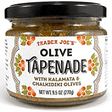

Tapenade (Olive Spread)
This is a really simple dish to prepare and it's always a big hit at parties.
My father recommends:
Make this the night before so that the flavors have time to blend. Just bring it
up to room temperature before you serve it. In the winter, try serving it warm.
Ingredients:
- 1 8oz. jar sundried tomatoes
- 2 large garlic cloves
- 2/3 c. kalamata olives
- 1 t. capers
Instructions:
- Combine tomatoes and garlic in a food processor. Blend until as smooth as possible.
- Add capers and olives. Plus the motor a few times until they are incorporated,
but still remain some texture.
- Serve on thin toast rounds with goat cheese and fresh basil garnish (optional).